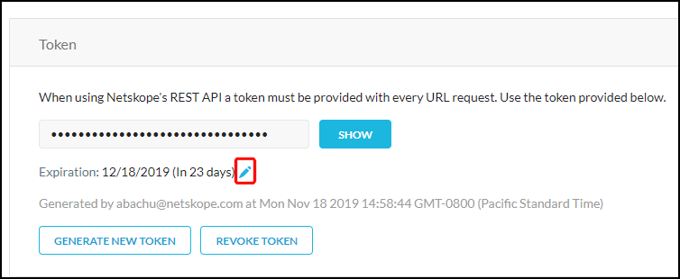

Netskope REST APIs
Netskope REST APIs use an auth token to make authorized calls to the API. Netskope REST APIs provide access to resources via URI paths. The token must be used in every REST API call for the tenant. The token can be generated or revoked in the Netskope UI by going to Settings > Tools > Rest API v1.
 |
To set the token expiration, click on the pencil icon next to the Expiration date.
|  |
From the dropdown list, select the number of hours, days, weeks or months to keep the token valid, or to never expire it, and then click Save.
 |
HTTP Requests
The request format is:
https://<tenant-name>.goskope.com/api/v1/<endpointname>?token=<token>&<op>=<value>
Valid endpoint names and query parameters are described in the subsequent sections. The token passed is the token obtained from the REST API page in the Netskope UI.
HTTP Responses
Netskope REST API uses JSON format for all the responses with the following error codes:
HTTP Response Code | Description |
|---|---|
200 | Success |
302 | Redirect |
403 | Unauthorized |
404 | Not found |
429 | Too Many Requests |
500 | Internal server error |
503 | Service under maintenance |
The general format of a success response is as follows:
{
"status" : "success",
"data" : [
{ result entry 1 },
{ result entry 2 },
…
]
}The general format of an error response is as follows:
{
"status" : "error",
"errorCode" : "error code in string format e.g. Authorization Error"
"errors" : [ "error message 1", "error message 2", ... ]
}Each error produces an entry in the errors array.
Rate Limiting
Rate-limiting must be factored when using the Netskope REST APIs. If an excessive usage level is reached, a standard 429 Too Many Requests error will be returned. To avoid this error, limit your REST API calls to no more than 24 requests every 5 seconds. Four requests are processed the first second, while 20 are queued and processed over the next four seconds.